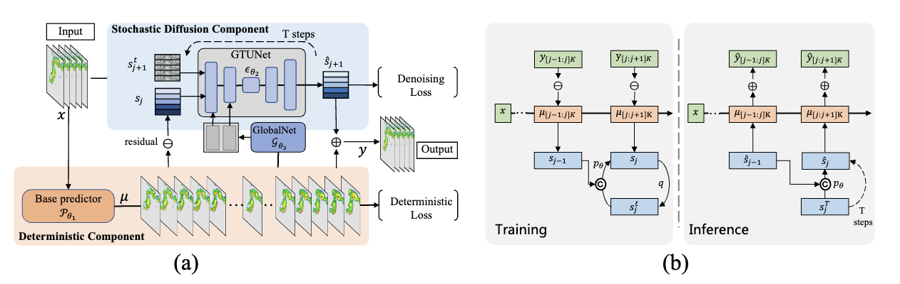
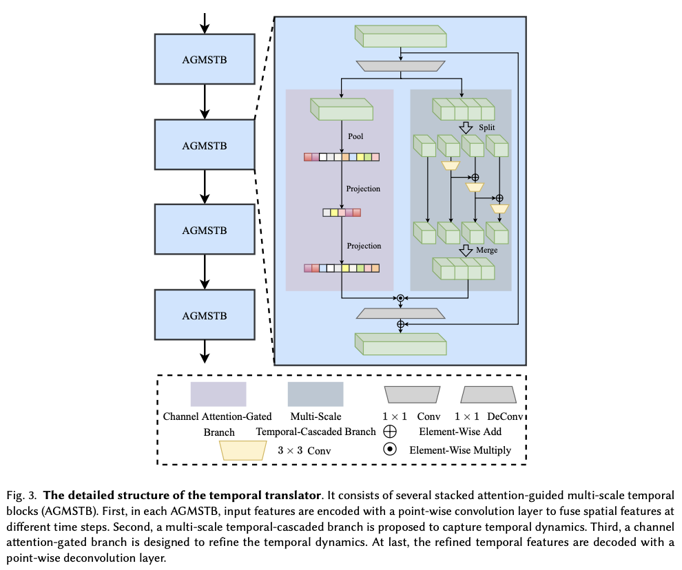
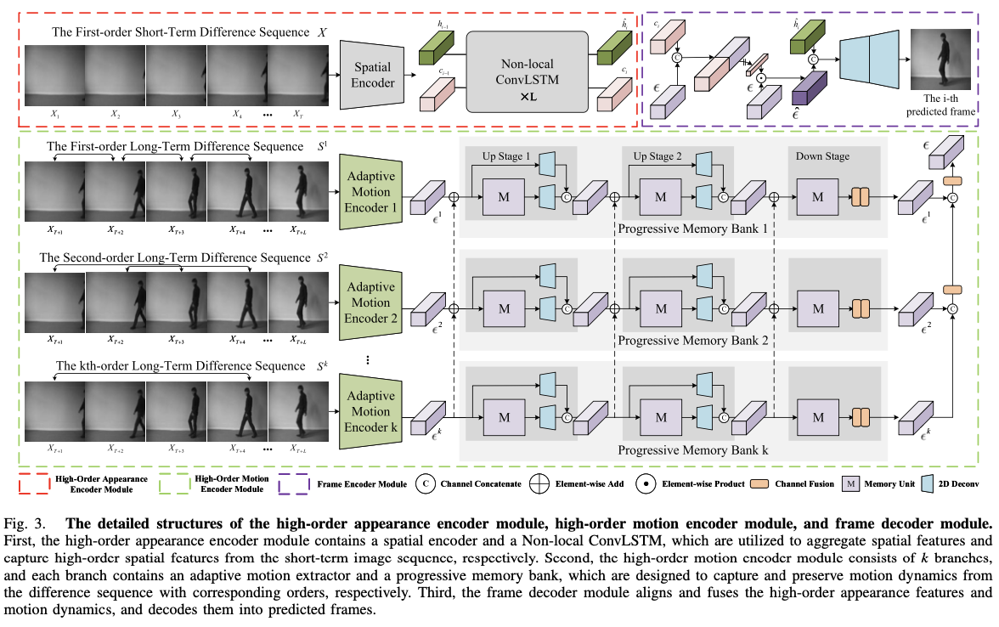
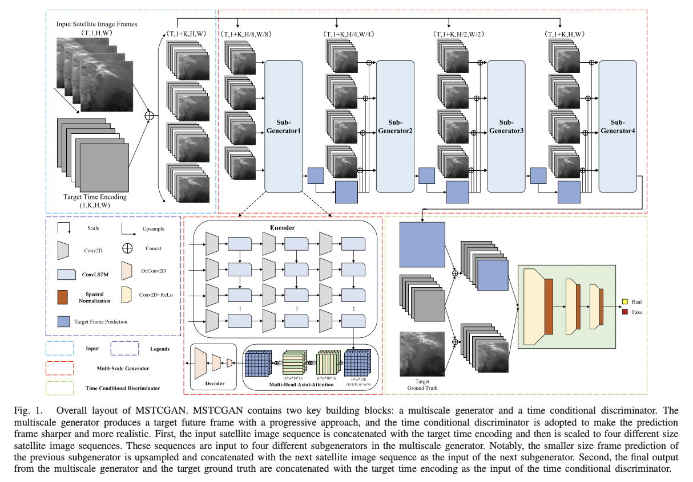

Kuai Dai 代快PhD student
Harbin Institute of Technology, Shenzhen (HITSZ),
|
|
About Me
Research
Selected Publications
|  | DiffCast: A Unified Framework via Residual Diffusion for Precipitation Nowcasting. Demin Yu, Xutao Li*, Yunming Ye, Baoquan Zhang, Chuyao Luo, Kuai Dai, Rui Wang, Xunlai Chen. Proceedings of the IEEE/CVF Conference on Computer Vision and Pattern Recognition (CVPR), 2024. [PDF] |
|  | TinyPredNet: A-Lightweight-Framework-for-Satellite-Image-Sequence-Prediction. Kuai Dai, Xutao Li*, Huiwei Lin, Yin Jiang, Xunlai Chen, Yunming Ye, Di Xian. ACM Transactions on Multimedia Computing, Communications, and Applications (TOMM), 2023. [PDF] [Code] |

|
Learning spatial-temporal consistency for satellite image sequence prediction. Kuai Dai, Xutao Li*, Chi Ma, Shenyuan Lu, Yunming Ye, Di Xian, Lin Tian, Danyu Qin. IEEE Transactions on Geoscience and Remote Sensing (TGRS), 2023. [PDF] |
|  | Exploring and Exploiting High-Order Spatial-Temporal Dynamics for Long-Term Frame Prediction. Kuai Dai, Xutao Li*, Yunming Ye, Yaowei Wang, Shanshan Feng, Di Xian. IEEE Transactions on Circuits and Systems for Video Technology (TCSVT), 2023. [PDF] |
|  | Learning spatial-temporal consistency for satellite image sequence prediction. Kuai Dai, Xutao Li*, Yunming Ye, Shanshan Feng, Danyu Qin, Rui Ye. IEEE Transactions on Geoscience and Remote Sensing (TGRS), 2022. [PDF] |
News
Academic Services
Work Experience
© Kuai Dai | Last updated: Mar 12 2024